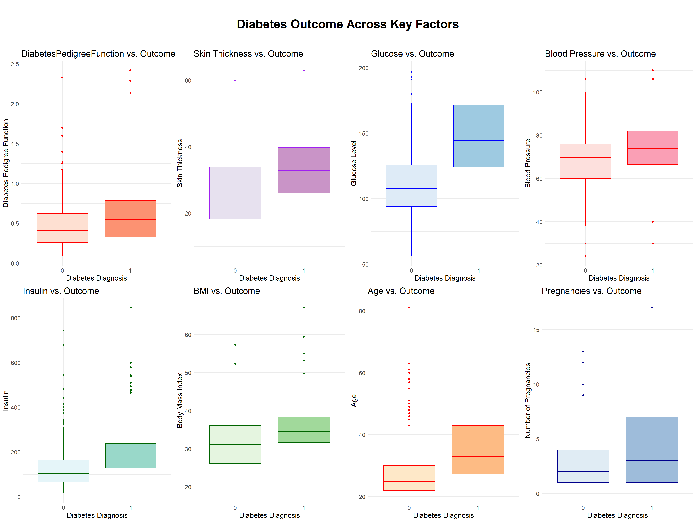

Show the code
library(tidyverse)
library(ggplot2)
library(GGally)
library(glmnet)
library(caret)
library(MASS)
library(pROC)
library(cowplot)Arnab Das
April 21, 2024
Diabetes is a prevalent chronic metabolic disorder posing significant health and economic burdens globally, particularly with the recent rise in type 2 diabetes cases. Predictive modeling offers a valuable approach for identifying individuals at risk and intervening early. The dataset we analyze in this project exclusively consists of female patients aged 21 years or above, all of whom are of Pima Indian heritage. These demographic constraints ensure a focused examination of diabetes within this specific population subset. Diagnostic measurements crucial for diabetes prediction, including glucose levels, blood pressure, insulin levels, and BMI were collected through medical examinations and tests conducted by healthcare professionals. Our aim is to develop an effective tool for diabetes risk assessment to gain insights into the factors contributing to its onset, ultimately improving health outcomes and quality of life for individuals vulnerable to diabetes.
The dataset originates from the National Institute of Diabetes and Digestive and Kidney Diseases and is utilized to predict the probability of diabetes diagnosis in female subjects aged 21 and above. There are a total of 768 observations and 9 variables in the dataset. The target variable is Outcome which indicates the presence of diabetes. The 8 explanatory variables are: Pregnancies, Glucose, BloodPressure, Skin Thickness, Insulin, BMI, DiabetesPredigreeFunction and Age. Below are the detailed description of each explanatory varibles:
Pregnancies: Integer variable indicating the number of pregnancies the individual has experienced.Glucose: Numeric variable representing plasma glucose concentration at 2 hours in an oral glucose tolerance test, measured in mg/dL.BloodPressure: Numeric variable denoting the diastolic blood pressure, measured in mmHg.Skin Thickness: Numeric variable indicating the thickness of the triceps skin fold, measured in mm.Insulin: Numeric variable representing insulin levels in the bloodstream two hours after a specific event (such as the administration of glucose), measured in micro-units per milliliter of serum.BMI: Numeric variable representing Body Mass Index (BMI), a measure of body fat based on height and weight, measured in kg/m^2.DiabetesPedigreeFunction: Numeric variable representing a function which scores the likelihood of diabetes based on family history.Age: Integer variable indicating the age of the individual.Outcome: Categorical (binary) variable, where 0 represents absence of diabetes and 1 represents presence of diabetes. This variable is the target variable for prediction.The primary objective of this project is to develop a predictive model capable for predicting the probability of a subject having diabetes based on their diagnostic measurements. By variable and model selection, we aim to build a “best” model for prediction among all candidate models. Through this exploration, we seek to gain insights into the underlying factors contributing to diabetes onset and create a valuable tool for diabetes risk assessment. Further analysis, such as correlation analysis, could contribute to ensuring the reliability and robustness of the observed relationships.
Pregnancies Glucose BloodPressure SkinThickness Insulin BMI
1 6 148 72 35 0 33.6
2 1 85 66 29 0 26.6
3 8 183 64 0 0 23.3
4 1 89 66 23 94 28.1
5 0 137 40 35 168 43.1
6 5 116 74 0 0 25.6
DiabetesPedigreeFunction Age Outcome
1 0.627 50 1
2 0.351 31 0
3 0.672 32 1
4 0.167 21 0
5 2.288 33 1
6 0.201 30 0[1] 768Missing values can introduce bias in parameter estimates and reduce their precision. Upon observing that several attributes in our dataset contain missing values, we opted to clean the data by removing these rows.
Pregnancies Glucose BloodPressure SkinThickness Insulin BMI
4 1 89 66 23 94 28.1
5 0 137 40 35 168 43.1
7 3 78 50 32 88 31.0
9 2 197 70 45 543 30.5
14 1 189 60 23 846 30.1
15 5 166 72 19 175 25.8
DiabetesPedigreeFunction Age Outcome
4 0.167 21 0
5 2.288 33 1
7 0.248 26 1
9 0.158 53 1
14 0.398 59 1
15 0.587 51 1[1] 392
0 1
262 130 The number of rows in our dataset after removing the 0 values is 392. Although the dataset size has decreased, the remaining data still provides sufficient information to explore relationships, trends, and patterns. By excluding rows with unreliable physiological measurements, we ensure the integrity and accuracy of the dataset, allowing for more reliable insights and interpretations from subsequent analyses.
From some basic exploratory data analysis we see the dataset contains around one-third positive (1) outcomes, and two-thirds negative (0) outomes, they are generally balanced enough. However, it’s important to remain vigilant for potential issues related to class imbalance and to employ appropriate techniques if imbalance becomes problematic during analysis.
Before delving into specifics, it’s essential to examine the overall distribution of outcomes across variables. This exploration provides insight into how outcomes vary in response to changes in each variable.
According to regression assumptions, multicollinearity among explanatory variables should be avoided. If a multicollinearity problem exists in the dataset, the standard errors of estimated coefficients will be inflated, and coefficient estimates will be unstable, making it difficult to determine variable significance. Additionally, the interpretation of coefficients will be misleading. We can explore the correlation matrix for better insights.
# getting correlation values between variables
corr_matrix <- diabetes_clean %>%
dplyr::select(- Outcome) %>%
cor() %>%
as.data.frame() %>%
rownames_to_column("var1") %>%
pivot_longer(-var1, names_to = "var2", values_to = "corr")
# plotting a correlation matrix
options(repr.plot.width = 15, repr.plot.height = 15)
corr_matrix %>%
ggplot(aes(var1, var2)) +
geom_tile(aes(fill = corr), color = "white") +
scale_fill_distiller("Correlation Coefficient \n",
palette = "Spectral",
direction = 1, limits = c(-1,1)
) +
theme(
axis.text.x = element_text(
angle = 45, vjust = 1,
size = 18, hjust = 1
),
axis.text.y = element_text(
vjust = 1,
size = 18, hjust = 1
),
title = element_text(size = 20, face = "bold"),
legend.title = element_text(size = 18, face = "bold"),
legend.text = element_text(size = 20),
legend.key.size = unit(2, "cm"),
text = element_text(size = 20),
plot.title = element_text(hjust = 0.5, face = "bold", size = 25)
) +
coord_fixed() +
geom_text(aes(var1, var2, label = round(corr, 2)), color = "black", size = 6) +
labs(title = "Correlation Matrix")In the dataset analysis, several pairs of variables show significant correlations. Notably, Glucose and Insulin correlate at 0.58, indicating a regulatory response to blood sugar levels. Age and Pregnancies exhibit a correlation of 0.68, reflecting reproductive aging. BMI and SkinThickness correlate at 0.66, suggesting a link between body fat and skin thickness. BloodPressure and BMI show a correlation of 0.30, indicating a connection between hypertension and obesity. Lastly, Glucose and Age correlate at 0.34, potentially indicating age-related changes in glucose metabolism and diabetes risk. The above all shows the potential issue of multicollinearity in the dataset.
Conversely, the correlation between other variables appears to be within acceptable ranges, suggesting that they are not significantly affected by multicollinearity. Therefore, we need to addresse multicollinearity issue by some techniques such as variable selection or regularization methods,improving the robustness of the regression model.
The density plots for the variables in this dataset illustrate the distribution of each variable’s values. This visualization helps in understanding the spread, central tendency, and shape of the data for variables such as Pregnancies, Glucose, BloodPressure, Skin Thickness, Insulin, BMI, DiabetesPedigreeFunction, and Age. These plots offer insights into the prevalence and distribution of key factors associated with diabetes diagnosis in the female subjects aged 21 and above.
data_long <- diabetes_clean %>%
pivot_longer(cols = -Outcome, names_to = "Variable", values_to = "Value")
options(repr.plot.width = 15, repr.plot.height = 10)
density_plot <- ggplot(data_long, aes(x = Value, fill = Variable)) +
geom_density(alpha = 0.5) +
facet_wrap(~ Variable, scales = "free", nrow = 2, ncol = 4) +
theme_minimal() +
ggtitle("Density Plots of Factors") +
theme(plot.title = element_text(hjust = 0.5, face = "bold", size = 25),
text = element_text(size = 15)) +
guides(fill = "none")
density_plotAge skews right, indicating a younger population. Blood Pressure and BMI are normally distributed, representing the population. DiabetesPedigreeFunction and Insulin skew right, with low values prevalent; Glucose is normally distributed; Pregnancies skew right, suggesting fewer are common; Skin Thickness is nearly normal, peaking at lower values. These patterns aid in understanding population demographics and physiological factors influencing diabetes prediction.
We aim to gain insights into the relationship between each explanatory variable and the response variable before conducting regression analysis. Given the binary nature of the response variable, utilizing boxplots to visualize the relationship between each explanatory variable and the response variable offers a convenient approach.
function_plot <- ggplot(data = diabetes_clean, aes(x = factor(Outcome), y =DiabetesPedigreeFunction, fill = factor(Outcome))) +
geom_boxplot(colour = "red") +
labs(title = "DiabetesPedigreeFunction vs. Outcome",
x = "Diabetes Diagnosis",
y = "Diabetes Pedigree Function") + theme(
text = element_text(size = 20),
axis.text = element_text(size = 20),
axis.title = element_text(size = 15)
) +
scale_fill_brewer(palette = "Reds", labels = c("0" = "No Diabetes", "1" = "Diabetes"))+
theme_minimal() +
theme(legend.position = "none") +
theme(text = element_text(size = 15))
Skin_plot <- ggplot(data = diabetes_clean, aes(x = as.factor(Outcome), y =SkinThickness, fill = factor(Outcome))) +
geom_boxplot(colour = "purple") +
labs(title = "Skin Thickness vs. Outcome",
x = "Diabetes Diagnosis",
y = "Skin Thickness") + theme(
text = element_text(size = 20),
axis.text = element_text(size = 20),
axis.title = element_text(size = 15)
) +
scale_fill_brewer(palette = "PuRd", labels = c("0" = "No Diabetes", "1" = "Diabetes"))+
theme_minimal() +
theme(legend.position = "none") +
theme(text = element_text(size = 15))
glucose_plot <- ggplot(data = diabetes_clean, aes(x = as.factor(Outcome), y =Glucose, fill = factor(Outcome))) +
geom_boxplot(colour = "blue") +
labs(title = "Glucose vs. Outcome",
x = "Diabetes Diagnosis",
y = "Glucose Level") + theme(
text = element_text(size = 20),
axis.text = element_text(size = 20),
axis.title = element_text(size = 15)
) +
scale_fill_brewer(palette = "Blues", labels = c("0" = "No Diabetes", "1" = "Diabetes"))+
theme_minimal() +
theme(legend.position = "none") +
theme(text = element_text(size = 15))
bloodPressure_plot <- ggplot(data = diabetes_clean, aes(x = as.factor(Outcome), y =BloodPressure, fill = factor(Outcome))) +
geom_boxplot(colour = "red") +
labs(title = "Blood Pressure vs. Outcome",
x = "Diabetes Diagnosis",
y = "Blood Pressure") + theme(
text = element_text(size = 20),
axis.text = element_text(size = 20),
axis.title = element_text(size = 15)
) +
scale_fill_brewer(palette = "RdPu", labels = c("0" = "No Diabetes", "1" = "Diabetes"))+
theme_minimal() +
theme(legend.position = "none") +
theme(text = element_text(size = 15))
Insulin_plot <- ggplot(data = diabetes_clean, aes(x = as.factor(Outcome), y =Insulin, fill = factor(Outcome))) +
geom_boxplot(colour = "darkgreen") +
labs(title = "Insulin vs. Outcome",
x = "Diabetes Diagnosis",
y = "Insulin") + theme(
text = element_text(size = 20),
axis.text = element_text(size = 20),
axis.title = element_text(size = 15)
) +
scale_fill_brewer(palette = "BuGn", labels = c("0" = "No Diabetes", "1" = "Diabetes"))+
theme_minimal() +
theme(legend.position = "none") +
theme(text = element_text(size = 15))
BMI_plot <- ggplot(data = diabetes_clean, aes(x = as.factor(Outcome), y =BMI, fill = factor(Outcome))) +
geom_boxplot(colour = "darkgreen") +
labs(title = "BMI vs. Outcome",
x = "Diabetes Diagnosis",
y = "Body Mass Index") + theme(
text = element_text(size = 20),
axis.text = element_text(size = 20),
axis.title = element_text(size = 15)
) +
scale_fill_brewer(palette = "Greens", labels = c("0" = "No Diabetes", "1" = "Diabetes")) +
theme_minimal() +
theme(legend.position = "none") +
theme(text = element_text(size = 15))
Age_plot <- ggplot(data = diabetes_clean, aes(x = as.factor(Outcome), y =Age, fill = factor(Outcome))) +
geom_boxplot(colour = "red") +
labs(title = "Age vs. Outcome",
x = "Diabetes Diagnosis",
y = "Age") + theme(
text = element_text(size = 20),
axis.text = element_text(size = 20),
axis.title = element_text(size = 15)
) +
scale_fill_brewer(palette = "OrRd", labels = c("0" = "No Diabetes", "1" = "Diabetes")) +
theme_minimal() +
theme(legend.position = "none") +
theme(text = element_text(size = 15))
Pregnancies_plot <- ggplot(data = diabetes_clean, aes(x = as.factor(Outcome), y =Pregnancies, fill = factor(Outcome))) +
geom_boxplot(colour = "DarkBlue") +
labs(title = "Pregnancies vs. Outcome",
x = "Diabetes Diagnosis",
y = "Number of Pregnancies") + theme(
text = element_text(size = 20),
axis.text = element_text(size = 20),
axis.title = element_text(size = 15)
) +
scale_fill_brewer(palette = "BuPu", labels = c("0" = "No Diabetes", "1" = "Diabetes")) +
theme_minimal() +
theme(legend.position = "none") +
theme(text = element_text(size = 15))
combined_plot <- plot_grid(function_plot, Skin_plot, glucose_plot, bloodPressure_plot, Insulin_plot, BMI_plot, Age_plot, Pregnancies_plot, nrow = 2, ncol = 4)
options(repr.plot.width = 20, repr.plot.height = 15)
plot_grid(ggdraw() + draw_label("Diabetes Outcome Across Key Factors", fontface='bold', size = 25), combined_plot, ncol=1, rel_heights=c(0.1, 1))
From the eight boxplots above, a notable disparity emerges in the mean glucose levels between individuals with and without diabetes. Specifically, the mean glucose level appears markedly higher among those with diabetes compared to those without, suggesting a positive association between glucose level and diabetes. Given this observation, further investigation into the relationship between glucose level and diabetes outcome is warranted.
Moreover, upon inspecting the boxplot depicting diabetes status against age, a similar pattern emerges. Individuals diagnosed with diabetes have a higher mean age compared to those without. Consequently, it can be inferred that both age and glucose level are potentially significant explanatory variables associated with diabetes outcome.
Additionally, it’s noteworthy that the mean values of other variables exhibit slight variations based on whether individuals have diabetes or not. Specifically, when an individual has diabetes, the mean values of all eight predictor variables are higher compared to when the person doesn’t have diabetes, suggesting a potentially positive relationship between each X and Y to some extent.
We will begin with a full model incorporating all eight variables, then use backward selection based on AIC and BIC to refine our model selection. This process yields two models: an AIC-selected model and a BIC-selected model. Backward selection eliminates a non-significant predictor from the model in each interaction, resulting in an interpretable final model. AIC and BIC serve as suitable selection criteria due to the binary nature of the response variable in our dataset. Unlike adjusted \(R^2\) or residual mean square, AIC and BIC focus on maximizing the likelihood of the data while penalizing model complexity. For comparision, AIC emphasizes maximizing the likelihood, BIC adds a higher penalty for decreasing model complexity, favoring a more straightforward and simpler model.
Given the objective of setting up a model for prediction, avoiding model overfitting and reducing the variance of estimated cofficients are important concerns we need to consider. To address this concern, LASSO regression gives us a great advantage in terms of effectively shrinking some coefficients to zero, thereby increasing the model’s generalizability to out-of-sample data. Therefore, we will also incorporate a LASSO regression model into our analysis to serve as another candidate model.
We will compare the predictive performance of four candidate models: the full model, AIC-selected model, BIC-selected model, and LASSO model. After splitting the data into training and testing subsets, we will build up each model using the training dataset and evaluate their performance based on AUC values. The model with the highest AUC value was selected as the final model. We will then assess the generalization ability of the final model by fitting it to the testing dataset and computing the AUC value. Using a probability threshold of 0.5, we classify individuals as “1” or “0” accordingly. Additionally, we will compute confusion matrices and evaluated metrics such as Accuracy and Precision to determine the best model for predicting diabetes status. This comprehensive approach allows us to identify the most effective model for our predictive task.
[1] 275[1] 117
Call:
glm(formula = Outcome ~ ., family = binomial, data = diabetes_train)
Coefficients:
Estimate Std. Error z value Pr(>|z|)
(Intercept) -1.050e+01 1.482e+00 -7.087 1.37e-12 ***
Pregnancies -1.740e-02 6.880e-02 -0.253 0.8004
Glucose 4.394e-02 7.526e-03 5.838 5.27e-09 ***
BloodPressure -7.669e-03 1.558e-02 -0.492 0.6225
SkinThickness 3.943e-03 2.082e-02 0.189 0.8498
Insulin -6.144e-04 1.651e-03 -0.372 0.7097
BMI 8.170e-02 3.462e-02 2.360 0.0183 *
DiabetesPedigreeFunction 1.121e+00 5.238e-01 2.139 0.0324 *
Age 4.648e-02 2.312e-02 2.010 0.0444 *
---
Signif. codes: 0 '***' 0.001 '**' 0.01 '*' 0.05 '.' 0.1 ' ' 1
(Dispersion parameter for binomial family taken to be 1)
Null deviance: 354.52 on 274 degrees of freedom
Residual deviance: 238.11 on 266 degrees of freedom
AIC: 256.11
Number of Fisher Scoring iterations: 5Start: AIC=256.11
Outcome ~ Pregnancies + Glucose + BloodPressure + SkinThickness +
Insulin + BMI + DiabetesPedigreeFunction + Age
Df Deviance AIC
- SkinThickness 1 238.15 254.15
- Pregnancies 1 238.18 254.18
- Insulin 1 238.25 254.25
- BloodPressure 1 238.35 254.35
<none> 238.11 256.11
- Age 1 242.40 258.40
- DiabetesPedigreeFunction 1 243.01 259.01
- BMI 1 244.01 260.01
- Glucose 1 282.11 298.11
Step: AIC=254.15
Outcome ~ Pregnancies + Glucose + BloodPressure + Insulin + BMI +
DiabetesPedigreeFunction + Age
Df Deviance AIC
- Pregnancies 1 238.21 252.21
- Insulin 1 238.29 252.29
- BloodPressure 1 238.40 252.40
<none> 238.15 254.15
- Age 1 242.62 256.62
- DiabetesPedigreeFunction 1 243.09 257.10
- BMI 1 247.97 261.97
- Glucose 1 282.15 296.15
Step: AIC=252.21
Outcome ~ Glucose + BloodPressure + Insulin + BMI + DiabetesPedigreeFunction +
Age
Df Deviance AIC
- Insulin 1 238.34 250.34
- BloodPressure 1 238.46 250.46
<none> 238.21 252.21
- DiabetesPedigreeFunction 1 243.20 255.20
- Age 1 244.89 256.89
- BMI 1 248.19 260.19
- Glucose 1 282.19 294.19
Step: AIC=250.34
Outcome ~ Glucose + BloodPressure + BMI + DiabetesPedigreeFunction +
Age
Df Deviance AIC
- BloodPressure 1 238.56 248.56
<none> 238.34 250.34
- DiabetesPedigreeFunction 1 243.28 253.28
- Age 1 244.93 254.93
- BMI 1 248.29 258.29
- Glucose 1 293.71 303.71
Step: AIC=248.56
Outcome ~ Glucose + BMI + DiabetesPedigreeFunction + Age
Df Deviance AIC
<none> 238.56 248.56
- DiabetesPedigreeFunction 1 243.82 251.82
- Age 1 245.01 253.01
- BMI 1 249.26 257.26
- Glucose 1 293.72 301.72
Call: glm(formula = Outcome ~ Glucose + BMI + DiabetesPedigreeFunction +
Age, family = binomial, data = diabetes_train)
Coefficients:
(Intercept) Glucose BMI
-10.62017 0.04244 0.07836
DiabetesPedigreeFunction Age
1.14649 0.04054
Degrees of Freedom: 274 Total (i.e. Null); 270 Residual
Null Deviance: 354.5
Residual Deviance: 238.6 AIC: 248.6
Call:
glm(formula = Outcome ~ DiabetesPedigreeFunction + Age + BMI +
Glucose, family = binomial, data = diabetes_train)
Coefficients:
Estimate Std. Error z value Pr(>|z|)
(Intercept) -10.620170 1.335864 -7.950 1.86e-15 ***
DiabetesPedigreeFunction 1.146492 0.520234 2.204 0.02754 *
Age 0.040539 0.016146 2.511 0.01205 *
BMI 0.078362 0.025096 3.122 0.00179 **
Glucose 0.042436 0.006673 6.360 2.02e-10 ***
---
Signif. codes: 0 '***' 0.001 '**' 0.01 '*' 0.05 '.' 0.1 ' ' 1
(Dispersion parameter for binomial family taken to be 1)
Null deviance: 354.52 on 274 degrees of freedom
Residual deviance: 238.56 on 270 degrees of freedom
AIC: 248.56
Number of Fisher Scoring iterations: 5
Call: glm(formula = Outcome ~ Glucose + BMI + Age, family = binomial,
data = diabetes_train)
Coefficients:
(Intercept) Glucose BMI Age
-10.19977 0.04212 0.08450 0.04100
Degrees of Freedom: 274 Total (i.e. Null); 271 Residual
Null Deviance: 354.5
Residual Deviance: 243.8 AIC: 251.8
Call:
glm(formula = Outcome ~ Age + BMI + Glucose, family = binomial,
data = diabetes_train)
Coefficients:
Estimate Std. Error z value Pr(>|z|)
(Intercept) -10.199770 1.287171 -7.924 2.30e-15 ***
Age 0.040997 0.015832 2.589 0.009612 **
BMI 0.084503 0.024857 3.400 0.000675 ***
Glucose 0.042124 0.006539 6.442 1.18e-10 ***
---
Signif. codes: 0 '***' 0.001 '**' 0.01 '*' 0.05 '.' 0.1 ' ' 1
(Dispersion parameter for binomial family taken to be 1)
Null deviance: 354.52 on 274 degrees of freedom
Residual deviance: 243.82 on 271 degrees of freedom
AIC: 251.82
Number of Fisher Scoring iterations: 5Confusion Matrix and Statistics
Reference
Prediction 0 1
0 159 35
1 21 60
Accuracy : 0.7964
95% CI : (0.7439, 0.8424)
No Information Rate : 0.6545
P-Value [Acc > NIR] : 1.8e-07
Kappa : 0.5335
Mcnemar's Test P-Value : 0.08235
Sensitivity : 0.6316
Specificity : 0.8833
Pos Pred Value : 0.7407
Neg Pred Value : 0.8196
Prevalence : 0.3455
Detection Rate : 0.2182
Detection Prevalence : 0.2945
Balanced Accuracy : 0.7575
'Positive' Class : 1
Confusion Matrix and Statistics
Reference
Prediction 0 1
0 160 35
1 20 60
Accuracy : 0.8
95% CI : (0.7478, 0.8456)
No Information Rate : 0.6545
P-Value [Acc > NIR] : 8.513e-08
Kappa : 0.5406
Mcnemar's Test P-Value : 0.05906
Sensitivity : 0.6316
Specificity : 0.8889
Pos Pred Value : 0.7500
Neg Pred Value : 0.8205
Prevalence : 0.3455
Detection Rate : 0.2182
Detection Prevalence : 0.2909
Balanced Accuracy : 0.7602
'Positive' Class : 1
Confusion Matrix and Statistics
Reference
Prediction 0 1
0 160 36
1 20 59
Accuracy : 0.7964
95% CI : (0.7439, 0.8424)
No Information Rate : 0.6545
P-Value [Acc > NIR] : 1.8e-07
Kappa : 0.5311
Mcnemar's Test P-Value : 0.04502
Sensitivity : 0.6211
Specificity : 0.8889
Pos Pred Value : 0.7468
Neg Pred Value : 0.8163
Prevalence : 0.3455
Detection Rate : 0.2145
Detection Prevalence : 0.2873
Balanced Accuracy : 0.7550
'Positive' Class : 1
Setting levels: control = 0, case = 1Setting direction: controls < casesFull model AUC value: 0.8774269Setting levels: control = 0, case = 1
Setting direction: controls < casesAIC-selected model AUC value: 0.8776023Setting levels: control = 0, case = 1
Setting direction: controls < casesBIC-selected model AUC value: 0.8598246
Call: cv.glmnet(x = model_matrix_X_train, y = matrix_Y_train, type.measure = "auc", nfolds = 5, alpha = 1, family = "binomial")
Measure: AUC
Lambda Index Measure SE Nonzero
min 0.01601 31 0.8510 0.02857 5
1se 0.07092 15 0.8241 0.03988 3[1] 0.07099 x 1 sparse Matrix of class "dgCMatrix"
s0
(Intercept) -5.220454794
Pregnancies .
Glucose 0.028193519
BloodPressure .
SkinThickness .
Insulin .
BMI 0.021872562
DiabetesPedigreeFunction .
Age 0.008939217Setting levels: control = 0, case = 1Setting direction: controls < cases
Call:
roc.default(response = diabetes_train$Outcome, predictor = predict(diabetes_LASSO_1se_AUC, newx = model_matrix_X_train)[, "s0"])
Data: predict(diabetes_LASSO_1se_AUC, newx = model_matrix_X_train)[, "s0"] in 180 controls (diabetes_train$Outcome 0) < 95 cases (diabetes_train$Outcome 1).
Area under the curve: 0.8496 Model AUC
1 Full Model 0.8774269
2 AIC-selected Model 0.8776023
3 BIC-selected Model 0.8598246
4 LASSO Model 0.8496491After comparing the AUC values for the four candidate models, we observed that the AIC-selected model had the best prediction performance on the training dataset. Consequently, we determined to adopt the AIC-selected model as our final predictive model. Next, we will assess the out-of-sample performance of our final model by applying it to the testing dataset, thereby generating the ROC curve and computing the corresponding AUC value.
options(repr.plot.width = 15, repr.plot.height = 10)
model_X_test <- diabetes_test[, -which(names(diabetes_test) == "Outcome")]
predicted_prob_AIC <- predict(AIC_model, newdata = model_X_test, type = "response")
predicted_fullmodel <- predict(full_model, newdata = model_X_test, type = "response")
predicted_prob_BIC <- predict(BIC_model, newdata = model_X_test, type = "response")
predicted_lasso <- predict(diabetes_LASSO_1se_AUC, newx = as.matrix(model_X_test))[,"s0"]
ROC_AIC_model_in_testdata <- roc(response = diabetes_test$Outcome, predictor = predicted_prob_AIC)Setting levels: control = 0, case = 1Setting direction: controls < casesSetting levels: control = 0, case = 1
Setting direction: controls < casesSetting levels: control = 0, case = 1
Setting direction: controls < casesSetting levels: control = 0, case = 1
Setting direction: controls < casesBased on our analysis, the AIC-selected model has the best prediction performance among the four models we compared. Upon fitting the AIC-selected model to the testing dataset, we obtained an AUC value of 0.808, which underscores the robust predictive capability of our AIC-selected model when applied to out-of-sample data.
Therefore, we have concluded that the AIC-selected model aligns most effectively with our project’s objective of establishing a predictive model for determining the probabilty of an individual having diabetes. Below is a summary of the selected model:
\[ \begin{align*} \log\left(\frac{p_i}{1-p_i}\right) &= -10.620170 +1.146492 \cdot \text{DiabetesPedigreeFunction} + 0.040539 \cdot \text{Age} \\ &\quad + 0.078362 \cdot \text{BMI} + 0.042436 \cdot \text{Glucose} \end{align*} \]
where \(p_i\) is the probability of the \(i{\text{th}}\) individual having diabetes.
Given an individual’s diabetes percentage, age, BMI, and glucose level, this model can be used to predictive the probability of diabetes as
\[p_{i} = \frac{1}{1+e^{-(-10.620170 + 1.146492 \times \text{DiabetesPedigreeFunction} + 0.040539 \times \text{Age} + 0.078362 \times \text{BMI} + 0.042436 \times \text{Glucose})}}\]
Through this project, we’ve developed a predictive model to estimate the probability of an individual having diabetes. In our final model, we’ve left with four key variables, making the model has the best prediction performance: DiabetesPedigreeFunction, Age, BMI, and Glucose. Notably, all coefficients associated with these variables are positive, indicating that higher values for these factors correlate with an increased prbability of diabetes. Following model comparison and selection processes, the AIC-selected model has been determined as the optimal choice, demonstrating best predictive performance both in-sample and out-of-sample prediction among our 4 candidate models with AUC value of approximately 0.8, indicating its robust predictive capabilities.
The outcome of our analysis was surprising. While AIC-based stepwise selection is commonly used to explore predictor-response relationships, we opted to assess the efficacy of a LASSO model, known for predictive power and overfitting avoidance. We expected the LASSO model to outperform the AIC-selected model in out-of-sample prediction accuracy. However, results showed the AIC-selected model not only offered good interpretability but also outperformed the LASSO model in terms of AUC values. This outcome is better than we expected as it signifies a balance between model interpretability and predictive powerness in our final model.
While the AIC-selected model performed best on the testing dataset, its superiority on out-of-sample data is not guaranteed. Implementing k-fold cross-validation and calculating CV-AUC values for our four candidate models can enhance our methodology. This approach assesses models across various data partitions, reducing reliance on chance results from a single train-test split. CV-AUC values may not always align with initial model selection; for instance, the Lasso model might show the highest CV-AUC value, indicating superior prediction performance. Integrating k-fold cross-validation into our model evaluation enhances our methodology’s robustness, ensuring our final predictive model is well-suited for generalization to unseen data.
A key area for future exploration is identifying additional predictors beyond those in our dataset that could influence diabetes risk. Factors like other medical histories and pharmaceutical supplements may provide valuable insights. Additionally, we should investigate how different parameters, such as lambda values, affect the LASSO model’s performance. In our analysis we use lambda.1se value, and explore the performance with the lambda.min value. In summary, exploring new predictors and optimizing regularization parameters can enhance our predictive models and improve our ability to predict and manage diabetes.
Related Study 1: Joshi, Ram D, and Chandra K Dhakal. “Predicting Type 2 Diabetes Using Logistic Regression and Machine Learning Approaches.” International Journal of Environmental Research and Public Health, U.S. National Library of Medicine, 9 July 2021, www.ncbi.nlm.nih.gov/pmc/articles/PMC8306487/.
Related Study 2: Chang, Victor, et al. “Pima Indians Diabetes Mellitus Classification Based on Machine Learning (ML) Algorithms.” Neural Computing & Applications, U.S. National Library of Medicine, 24 Mar. 2022, www.ncbi.nlm.nih.gov/pmc/articles/PMC8943493/.
Data source: National Institute of Diabetes and Digestive and Kidney Diseases. “Predict Diabetes.” Kaggle, 9 Nov. 2022, www.kaggle.com/datasets/whenamancodes/predict-diabities?resource=download.
More Details on data: “Pima Indians Diabetes Database - Dataset by Data-Society.” Data.World, 13 Dec. 2016, www.data.world/data-society/pima-indians-diabetes-database.
ROC in health data: Nahm, Francis Sahngun. “Receiver Operating Characteristic Curve: Overview and Practical Use for Clinicians.” Korean Journal of Anesthesiology, U.S. National Library of Medicine, Feb. 2022, www.ncbi.nlm.nih.gov/pmc/articles/PMC8831439/.
---
title: "Diabetes Prediction Modeling"
author: "Arnab Das"
date: "2024-04-21"
categories: [R]
output:
html_document:
css: styles.css
format:
html:
code-fold: true
code-summary: "Show the code"
code-tools: true
code-block-bg: true
code-block-border-left: "#31BAE9"
toc: true
toc-depth: 3
---
## Introduction:
Diabetes is a prevalent chronic metabolic disorder posing significant health and economic burdens globally, particularly with the recent rise in type 2 diabetes cases. Predictive modeling offers a valuable approach for identifying individuals at risk and intervening early. The dataset we analyze in this project exclusively consists of female patients aged 21 years or above, all of whom are of Pima Indian heritage. These demographic constraints ensure a focused examination of diabetes within this specific population subset. Diagnostic measurements crucial for diabetes prediction, including glucose levels, blood pressure, insulin levels, and BMI were collected through medical examinations and tests conducted by healthcare professionals. Our aim is to develop an effective tool for diabetes risk assessment to gain insights into the factors contributing to its onset, ultimately improving health outcomes and quality of life for individuals vulnerable to diabetes.
#### Data Overview:
The dataset originates from the National Institute of Diabetes and Digestive and Kidney Diseases and is utilized to predict the probability of diabetes diagnosis in female subjects aged 21 and above. There are a total of 768 observations and 9 variables in the dataset. The target variable is `Outcome` which indicates the presence of diabetes. The 8 explanatory variables are: `Pregnancies`, `Glucose`, `BloodPressure`, `Skin Thickness`, `Insulin`, `BMI`, `DiabetesPredigreeFunction` and `Age`. Below are the detailed description of each explanatory varibles:
- `Pregnancies`: Integer variable indicating the number of pregnancies the individual has experienced.
- `Glucose`: Numeric variable representing plasma glucose concentration at 2 hours in an oral glucose tolerance test, measured in mg/dL.
- `BloodPressure`: Numeric variable denoting the diastolic blood pressure, measured in mmHg.
- `Skin Thickness`: Numeric variable indicating the thickness of the triceps skin fold, measured in mm.
- `Insulin`: Numeric variable representing insulin levels in the bloodstream two hours after a specific event (such as the administration of glucose), measured in micro-units per milliliter of serum.
- `BMI`: Numeric variable representing Body Mass Index (BMI), a measure of body fat based on height and weight, measured in kg/m\^2.
- `DiabetesPedigreeFunction`: Numeric variable representing a function which scores the likelihood of diabetes based on family history.
- `Age`: Integer variable indicating the age of the individual.
- `Outcome`: Categorical (binary) variable, where 0 represents absence of diabetes and 1 represents presence of diabetes. This variable is the target variable for prediction.
#### Project Objective:
The primary objective of this project is to develop a predictive model capable for predicting the probability of a subject having diabetes based on their diagnostic measurements. By variable and model selection, we aim to build a **"best"** model for prediction among all candidate models. Through this exploration, we seek to gain insights into the underlying factors contributing to diabetes onset and create a valuable tool for diabetes risk assessment. Further analysis, such as correlation analysis, could contribute to ensuring the reliability and robustness of the observed relationships.
```{r, message=FALSE, warning = FALSE}
library(tidyverse)
library(ggplot2)
library(GGally)
library(glmnet)
library(caret)
library(MASS)
library(pROC)
library(cowplot)
```
#### Loading data:
```{r}
diabetes <- read.csv("diabetes.csv")
head(diabetes)
nrow(diabetes)
```
#### Removing missing values:
Missing values can introduce bias in parameter estimates and reduce their precision. Upon observing that several attributes in our dataset contain missing values, we opted to clean the data by removing these rows.
```{r}
diabetes_clean <- diabetes[!(diabetes$Glucose == 0 | diabetes$BloodPressure == 0 | diabetes$SkinThickness == 0 | diabetes$Insulin == 0 | diabetes$BMI == 0 | diabetes$DiabetesPedigreeFunction == 0 | diabetes$Age == 0), ]
head(diabetes_clean)
nrow(diabetes_clean)
outcome_counts <- table(diabetes_clean$Outcome)
print(outcome_counts)
```
#### Post data-cleaning overview:
The **number of rows** in our dataset after removing the 0 values is **392**. Although the dataset size has decreased, the remaining data still provides sufficient information to explore relationships, trends, and patterns. By excluding rows with unreliable physiological measurements, we ensure the integrity and accuracy of the dataset, allowing for more reliable insights and interpretations from subsequent analyses.
From some basic exploratory data analysis we see the dataset contains around **one-third** **positive (1)** outcomes, and **two-thirds** **negative (0)** outomes, they are generally balanced enough. However, it's important to remain vigilant for potential issues related to class imbalance and to employ appropriate techniques if imbalance becomes problematic during analysis.
## Methods and Results:
### Exploratory Data Analysis (EDA):
Before delving into specifics, it's essential to examine the overall distribution of outcomes across variables. This exploration provides insight into how outcomes vary in response to changes in each variable.
#### Explore the multicollinearity:
According to regression assumptions, multicollinearity among explanatory variables should be avoided. If a multicollinearity problem exists in the dataset, the standard errors of estimated coefficients will be inflated, and coefficient estimates will be unstable, making it difficult to determine variable significance. Additionally, the interpretation of coefficients will be misleading. We can explore the correlation matrix for better insights.
```{r,fig.dim = c(15, 15)}
# getting correlation values between variables
corr_matrix <- diabetes_clean %>%
dplyr::select(- Outcome) %>%
cor() %>%
as.data.frame() %>%
rownames_to_column("var1") %>%
pivot_longer(-var1, names_to = "var2", values_to = "corr")
# plotting a correlation matrix
options(repr.plot.width = 15, repr.plot.height = 15)
corr_matrix %>%
ggplot(aes(var1, var2)) +
geom_tile(aes(fill = corr), color = "white") +
scale_fill_distiller("Correlation Coefficient \n",
palette = "Spectral",
direction = 1, limits = c(-1,1)
) +
theme(
axis.text.x = element_text(
angle = 45, vjust = 1,
size = 18, hjust = 1
),
axis.text.y = element_text(
vjust = 1,
size = 18, hjust = 1
),
title = element_text(size = 20, face = "bold"),
legend.title = element_text(size = 18, face = "bold"),
legend.text = element_text(size = 20),
legend.key.size = unit(2, "cm"),
text = element_text(size = 20),
plot.title = element_text(hjust = 0.5, face = "bold", size = 25)
) +
coord_fixed() +
geom_text(aes(var1, var2, label = round(corr, 2)), color = "black", size = 6) +
labs(title = "Correlation Matrix")
```
##### Understanding variables which show correlation:
In the dataset analysis, several pairs of variables show significant correlations. Notably, `Glucose` and `Insulin` correlate at **0.58**, indicating a regulatory response to blood sugar levels. `Age` and `Pregnancies` exhibit a correlation of **0.68**, reflecting reproductive aging. `BMI` and `SkinThickness` correlate at **0.66**, suggesting a link between body fat and skin thickness. `BloodPressure` and `BMI` show a correlation of **0.30**, indicating a connection between hypertension and obesity. Lastly, `Glucose` and `Age` correlate at **0.34**, potentially indicating age-related changes in glucose metabolism and diabetes risk. The above all shows the potential issue of multicollinearity in the dataset.
Conversely, the correlation between other variables appears to be within acceptable ranges, suggesting that they are not significantly affected by multicollinearity. Therefore, we need to addresse multicollinearity issue by some techniques such as variable selection or regularization methods,improving the robustness of the regression model.
#### Distribution of predictors:
The density plots for the variables in this dataset illustrate the distribution of each variable's values. This visualization helps in understanding the spread, central tendency, and shape of the data for variables such as Pregnancies, Glucose, BloodPressure, Skin Thickness, Insulin, BMI, DiabetesPedigreeFunction, and Age. These plots offer insights into the prevalence and distribution of key factors associated with diabetes diagnosis in the female subjects aged 21 and above.
```{r, fig.dim = c(15, 10)}
data_long <- diabetes_clean %>%
pivot_longer(cols = -Outcome, names_to = "Variable", values_to = "Value")
options(repr.plot.width = 15, repr.plot.height = 10)
density_plot <- ggplot(data_long, aes(x = Value, fill = Variable)) +
geom_density(alpha = 0.5) +
facet_wrap(~ Variable, scales = "free", nrow = 2, ncol = 4) +
theme_minimal() +
ggtitle("Density Plots of Factors") +
theme(plot.title = element_text(hjust = 0.5, face = "bold", size = 25),
text = element_text(size = 15)) +
guides(fill = "none")
density_plot
```
##### Understanding the distributions:
Age skews right, indicating a younger population. Blood Pressure and BMI are normally distributed, representing the population. DiabetesPedigreeFunction and Insulin skew right, with low values prevalent; Glucose is normally distributed; Pregnancies skew right, suggesting fewer are common; Skin Thickness is nearly normal, peaking at lower values. These patterns aid in understanding population demographics and physiological factors influencing diabetes prediction.
#### Observing the relationship between each predictor variable and the outcome:
We aim to gain insights into the relationship between each explanatory variable and the response variable before conducting regression analysis. Given the binary nature of the response variable, utilizing boxplots to visualize the relationship between each explanatory variable and the response variable offers a convenient approach.
```{r,fig.dim = c(20, 15)}
function_plot <- ggplot(data = diabetes_clean, aes(x = factor(Outcome), y =DiabetesPedigreeFunction, fill = factor(Outcome))) +
geom_boxplot(colour = "red") +
labs(title = "DiabetesPedigreeFunction vs. Outcome",
x = "Diabetes Diagnosis",
y = "Diabetes Pedigree Function") + theme(
text = element_text(size = 20),
axis.text = element_text(size = 20),
axis.title = element_text(size = 15)
) +
scale_fill_brewer(palette = "Reds", labels = c("0" = "No Diabetes", "1" = "Diabetes"))+
theme_minimal() +
theme(legend.position = "none") +
theme(text = element_text(size = 15))
Skin_plot <- ggplot(data = diabetes_clean, aes(x = as.factor(Outcome), y =SkinThickness, fill = factor(Outcome))) +
geom_boxplot(colour = "purple") +
labs(title = "Skin Thickness vs. Outcome",
x = "Diabetes Diagnosis",
y = "Skin Thickness") + theme(
text = element_text(size = 20),
axis.text = element_text(size = 20),
axis.title = element_text(size = 15)
) +
scale_fill_brewer(palette = "PuRd", labels = c("0" = "No Diabetes", "1" = "Diabetes"))+
theme_minimal() +
theme(legend.position = "none") +
theme(text = element_text(size = 15))
glucose_plot <- ggplot(data = diabetes_clean, aes(x = as.factor(Outcome), y =Glucose, fill = factor(Outcome))) +
geom_boxplot(colour = "blue") +
labs(title = "Glucose vs. Outcome",
x = "Diabetes Diagnosis",
y = "Glucose Level") + theme(
text = element_text(size = 20),
axis.text = element_text(size = 20),
axis.title = element_text(size = 15)
) +
scale_fill_brewer(palette = "Blues", labels = c("0" = "No Diabetes", "1" = "Diabetes"))+
theme_minimal() +
theme(legend.position = "none") +
theme(text = element_text(size = 15))
bloodPressure_plot <- ggplot(data = diabetes_clean, aes(x = as.factor(Outcome), y =BloodPressure, fill = factor(Outcome))) +
geom_boxplot(colour = "red") +
labs(title = "Blood Pressure vs. Outcome",
x = "Diabetes Diagnosis",
y = "Blood Pressure") + theme(
text = element_text(size = 20),
axis.text = element_text(size = 20),
axis.title = element_text(size = 15)
) +
scale_fill_brewer(palette = "RdPu", labels = c("0" = "No Diabetes", "1" = "Diabetes"))+
theme_minimal() +
theme(legend.position = "none") +
theme(text = element_text(size = 15))
Insulin_plot <- ggplot(data = diabetes_clean, aes(x = as.factor(Outcome), y =Insulin, fill = factor(Outcome))) +
geom_boxplot(colour = "darkgreen") +
labs(title = "Insulin vs. Outcome",
x = "Diabetes Diagnosis",
y = "Insulin") + theme(
text = element_text(size = 20),
axis.text = element_text(size = 20),
axis.title = element_text(size = 15)
) +
scale_fill_brewer(palette = "BuGn", labels = c("0" = "No Diabetes", "1" = "Diabetes"))+
theme_minimal() +
theme(legend.position = "none") +
theme(text = element_text(size = 15))
BMI_plot <- ggplot(data = diabetes_clean, aes(x = as.factor(Outcome), y =BMI, fill = factor(Outcome))) +
geom_boxplot(colour = "darkgreen") +
labs(title = "BMI vs. Outcome",
x = "Diabetes Diagnosis",
y = "Body Mass Index") + theme(
text = element_text(size = 20),
axis.text = element_text(size = 20),
axis.title = element_text(size = 15)
) +
scale_fill_brewer(palette = "Greens", labels = c("0" = "No Diabetes", "1" = "Diabetes")) +
theme_minimal() +
theme(legend.position = "none") +
theme(text = element_text(size = 15))
Age_plot <- ggplot(data = diabetes_clean, aes(x = as.factor(Outcome), y =Age, fill = factor(Outcome))) +
geom_boxplot(colour = "red") +
labs(title = "Age vs. Outcome",
x = "Diabetes Diagnosis",
y = "Age") + theme(
text = element_text(size = 20),
axis.text = element_text(size = 20),
axis.title = element_text(size = 15)
) +
scale_fill_brewer(palette = "OrRd", labels = c("0" = "No Diabetes", "1" = "Diabetes")) +
theme_minimal() +
theme(legend.position = "none") +
theme(text = element_text(size = 15))
Pregnancies_plot <- ggplot(data = diabetes_clean, aes(x = as.factor(Outcome), y =Pregnancies, fill = factor(Outcome))) +
geom_boxplot(colour = "DarkBlue") +
labs(title = "Pregnancies vs. Outcome",
x = "Diabetes Diagnosis",
y = "Number of Pregnancies") + theme(
text = element_text(size = 20),
axis.text = element_text(size = 20),
axis.title = element_text(size = 15)
) +
scale_fill_brewer(palette = "BuPu", labels = c("0" = "No Diabetes", "1" = "Diabetes")) +
theme_minimal() +
theme(legend.position = "none") +
theme(text = element_text(size = 15))
combined_plot <- plot_grid(function_plot, Skin_plot, glucose_plot, bloodPressure_plot, Insulin_plot, BMI_plot, Age_plot, Pregnancies_plot, nrow = 2, ncol = 4)
options(repr.plot.width = 20, repr.plot.height = 15)
plot_grid(ggdraw() + draw_label("Diabetes Outcome Across Key Factors", fontface='bold', size = 25), combined_plot, ncol=1, rel_heights=c(0.1, 1))
```
##### Conclusion from boxplots:
- From the eight boxplots above, a notable disparity emerges in the mean glucose levels between individuals with and without diabetes. Specifically, the mean glucose level appears markedly higher among those with diabetes compared to those without, suggesting a positive association between glucose level and diabetes. Given this observation, further investigation into the relationship between glucose level and diabetes outcome is warranted.
- Moreover, upon inspecting the boxplot depicting diabetes status against age, a similar pattern emerges. Individuals diagnosed with diabetes have a higher mean age compared to those without. Consequently, it can be inferred that both age and glucose level are potentially significant explanatory variables associated with diabetes outcome.
- Additionally, it's noteworthy that the mean values of other variables exhibit slight variations based on whether individuals have diabetes or not. Specifically, when an individual has diabetes, the mean values of all eight predictor variables are higher compared to when the person doesn't have diabetes, suggesting a potentially positive relationship between each X and Y to some extent.
### Methods (plan):
#### Model selection methods:
- We will begin with a full model incorporating all eight variables, then use backward selection based on AIC and BIC to refine our model selection. This process yields two models: an AIC-selected model and a BIC-selected model. Backward selection eliminates a non-significant predictor from the model in each interaction, resulting in an interpretable final model. AIC and BIC serve as suitable selection criteria due to the binary nature of the response variable in our dataset. Unlike adjusted $R^2$ or residual mean square, AIC and BIC focus on maximizing the likelihood of the data while penalizing model complexity. For comparision, AIC emphasizes maximizing the likelihood, BIC adds a higher penalty for decreasing model complexity, favoring a more straightforward and simpler model.
- Given the objective of setting up a model for prediction, avoiding model overfitting and reducing the variance of estimated cofficients are important concerns we need to consider. To address this concern, LASSO regression gives us a great advantage in terms of effectively shrinking some coefficients to zero, thereby increasing the model's generalizability to out-of-sample data. Therefore, we will also incorporate a LASSO regression model into our analysis to serve as another candidate model.
- We will compare the predictive performance of four candidate models: the full model, AIC-selected model, BIC-selected model, and LASSO model. After splitting the data into training and testing subsets, we will build up each model using the training dataset and evaluate their performance based on AUC values. The model with the highest AUC value was selected as the final model. We will then assess the generalization ability of the final model by fitting it to the testing dataset and computing the AUC value. Using a probability threshold of 0.5, we classify individuals as "1" or "0" accordingly. Additionally, we will compute confusion matrices and evaluated metrics such as Accuracy and Precision to determine the best model for predicting diabetes status. This comprehensive approach allows us to identify the most effective model for our predictive task.
#### Implementation of a proposed model:
- **Spliting the data into training set and testing set:**
```{r}
set.seed(123)
training.samples <- diabetes_clean$Outcome %>%
createDataPartition(p = 0.7, list = FALSE)
diabetes_train <- diabetes_clean[training.samples, ]
diabetes_test <- diabetes_clean[-training.samples, ]
nrow(diabetes_train)
nrow(diabetes_test)
```
- **Fit the full logistic regression model using training dataset:**
```{r}
full_model <- glm(formula = Outcome ~ ., family = binomial, data = diabetes_train)
summary(full_model)
```
- **Backward selection based on AIC to get a AIC-selected model:**
```{r}
AIC_selection <- stepAIC(full_model, method = "backward")
AIC_selection
```
```{r}
AIC_model <- glm(formula = Outcome ~ DiabetesPedigreeFunction + Age + BMI + Glucose, family = binomial, data = diabetes_train)
summary(AIC_model)
```
- **Backward selection based on BIC to get a BIC-selected model:**
```{r}
BIC_selection <- step(full_model, direction = "backward", k = log(nrow(diabetes_clean)), trace = FALSE)
BIC_selection
```
```{r}
BIC_model <- glm(formula = Outcome ~ Age + BMI + Glucose, family = binomial, data = diabetes_train)
summary(BIC_model)
```
- **Compute three confusion matrics for full model, AIC-selected model and BIC-selected model seperately:**
```{r}
diabetes_pred_class_full_model <-
round(predict(full_model, type = "response"), 0)
diabetes_confusion_matrix <-
confusionMatrix(
data = as.factor(diabetes_pred_class_full_model),
reference = as.factor(diabetes_train$Outcome),
positive = '1'
)
diabetes_confusion_matrix
```
```{r}
diabetes_pred_class_AIC_model <-
round(predict(AIC_model, type = "response"), 0)
diabetes_confusion_matrix_AIC_model <-
confusionMatrix(
data = as.factor(diabetes_pred_class_AIC_model),
reference = as.factor(diabetes_train$Outcome),
positive = '1'
)
diabetes_confusion_matrix_AIC_model
```
```{r}
diabetes_pred_class_BIC_model <-
round(predict(BIC_model, type = "response"), 0)
diabetes_confusion_matrix_BIC_model <-
confusionMatrix(
data = as.factor(diabetes_pred_class_BIC_model),
reference = as.factor(diabetes_train$Outcome),
positive = '1'
)
diabetes_confusion_matrix_BIC_model
```
- **Get AUC values for these 3 candidate models:**
```{r}
ROC_full_log <- roc(
response = diabetes_train$Outcome,
predictor = predict(full_model, type = "response")
)
cat("Full model AUC value:", ROC_full_log$auc)
ROC_AIC_log <- roc(
response = diabetes_train$Outcome,
predictor = predict(AIC_model, type = "response")
)
cat("AIC-selected model AUC value:", ROC_AIC_log$auc)
ROC_BIC_log <- roc(
response = diabetes_train$Outcome,
predictor = predict(BIC_model, type = "response")
)
cat("BIC-selected model AUC value:", ROC_BIC_log$auc)
```
- **Using LASSO to get a logistic regression model and compare the prediction performance of LASSO model with those 3 models above.**
```{r}
model_matrix_X_train <-
as.matrix(diabetes_train[, -9])
matrix_Y_train <-
as.matrix(diabetes_train[, 9], ncol = 1)
```
```{r}
#set.seed(271)
diabetes_cv_lambda_LASSO <-
cv.glmnet(
x = model_matrix_X_train, y = matrix_Y_train,
alpha = 1,
family = 'binomial',
type.measure = 'auc',
nfolds = 5)
diabetes_cv_lambda_LASSO
```
```{r}
diabetes_lambda_1se_AUC_LASSO <- round(diabetes_cv_lambda_LASSO$lambda.1se, 4)
diabetes_lambda_1se_AUC_LASSO
```
```{r}
diabetes_LASSO_1se_AUC <- glmnet(
x = model_matrix_X_train, y = matrix_Y_train,
alpha = 1,
family = 'binomial',
lambda = diabetes_lambda_1se_AUC_LASSO
)
coef(diabetes_LASSO_1se_AUC)
```
```{r,fig.dim = c(15, 10)}
ROC_lasso <-
roc(
response = diabetes_train$Outcome,
predictor = predict(diabetes_LASSO_1se_AUC,
newx = model_matrix_X_train)[,"s0"] )
ROC_lasso
AUC_lasso <- pROC::auc(ROC_lasso)
```
- **Compare the AUC values for our 4 candidate models, full model, AIC-selected model, BIC-selected model and LASSO model.**
```{r}
model_names <- c("Full Model", "AIC-selected Model", "BIC-selected Model", "LASSO Model")
AUC_values <- c(ROC_full_log$auc, ROC_AIC_log$auc, ROC_BIC_log$auc, as.double(AUC_lasso))
comparison_table <- data.frame(Model = model_names, AUC = AUC_values)
comparison_table
```
#### Results:
After comparing the AUC values for the four candidate models, we observed that the AIC-selected model had the best prediction performance on the training dataset. Consequently, we determined to adopt the AIC-selected model as our final predictive model. Next, we will assess the out-of-sample performance of our final model by applying it to the testing dataset, thereby generating the ROC curve and computing the corresponding AUC value.
```{r, fig.dim = c(15, 10)}
options(repr.plot.width = 15, repr.plot.height = 10)
model_X_test <- diabetes_test[, -which(names(diabetes_test) == "Outcome")]
predicted_prob_AIC <- predict(AIC_model, newdata = model_X_test, type = "response")
predicted_fullmodel <- predict(full_model, newdata = model_X_test, type = "response")
predicted_prob_BIC <- predict(BIC_model, newdata = model_X_test, type = "response")
predicted_lasso <- predict(diabetes_LASSO_1se_AUC, newx = as.matrix(model_X_test))[,"s0"]
ROC_AIC_model_in_testdata <- roc(response = diabetes_test$Outcome, predictor = predicted_prob_AIC)
plot(ROC_AIC_model_in_testdata, print.auc = TRUE, print.auc.x = 0.5, print.auc.y = 0.5, col = "steelblue", lwd = 3, lty = 2, main = "ROC Curve of Models using Test Dataset", cex.main = 2)
ROC_full_model_in_testdata <- roc(response = diabetes_test$Outcome, predictor = predicted_fullmodel)
plot(ROC_full_model_in_testdata, print.auc = TRUE, print.auc.x = 0.5, print.auc.y = 0.45, col = "black", lwd = 3, lty = 2, add = TRUE)
ROC_BIC_model_in_testdata <- roc(response = diabetes_test$Outcome, predictor = predicted_prob_BIC)
plot(ROC_BIC_model_in_testdata, print.auc = TRUE, print.auc.x = 0.5, print.auc.y = 0.40, col = "springgreen", lwd = 3, lty = 2, add = TRUE)
ROC_lasso_in_testdata <- roc(response = diabetes_test$Outcome, predictor = predicted_lasso)
plot(ROC_lasso_in_testdata, print.auc = TRUE, print.auc.x = 0.5, print.auc.y = 0.35, col = "red", lwd = 3, lty = 2, add = TRUE)
legend("bottomright", legend = model_names, col = c("black", "steelblue", "springgreen", "red"), lty = 2, lwd = 3)
```
#### Result summary and conclusion:
Based on our analysis, the AIC-selected model has the best prediction performance among the four models we compared. Upon fitting the AIC-selected model to the testing dataset, we obtained an AUC value of 0.808, which underscores the robust predictive capability of our AIC-selected model when applied to out-of-sample data.
Therefore, we have concluded that the AIC-selected model aligns most effectively with our project's objective of establishing a predictive model for determining the probabilty of an individual having diabetes. Below is a summary of the selected model:
$$
\begin{align*}
\log\left(\frac{p_i}{1-p_i}\right) &= -10.620170 +1.146492 \cdot \text{DiabetesPedigreeFunction} + 0.040539 \cdot \text{Age} \\
&\quad + 0.078362 \cdot \text{BMI} + 0.042436 \cdot \text{Glucose}
\end{align*}
$$
where $p_i$ is the probability of the $i{\text{th}}$ individual having diabetes.
Given an individual's diabetes percentage, age, BMI, and glucose level, this model can be used to predictive the probability of diabetes as
$$p_{i} = \frac{1}{1+e^{-(-10.620170 + 1.146492 \times \text{DiabetesPedigreeFunction} + 0.040539 \times \text{Age} + 0.078362 \times \text{BMI} + 0.042436 \times \text{Glucose})}}$$
## Discussion:
Through this project, we've developed a predictive model to estimate the probability of an individual having diabetes. In our final model, we've left with four key variables, making the model has the best prediction performance: DiabetesPedigreeFunction, Age, BMI, and Glucose. Notably, all coefficients associated with these variables are positive, indicating that higher values for these factors correlate with an increased prbability of diabetes. Following model comparison and selection processes, the AIC-selected model has been determined as the optimal choice, demonstrating best predictive performance both in-sample and out-of-sample prediction among our 4 candidate models with AUC value of approximately 0.8, indicating its robust predictive capabilities.
The outcome of our analysis was surprising. While AIC-based stepwise selection is commonly used to explore predictor-response relationships, we opted to assess the efficacy of a LASSO model, known for predictive power and overfitting avoidance. We expected the LASSO model to outperform the AIC-selected model in out-of-sample prediction accuracy. However, results showed the AIC-selected model not only offered good interpretability but also outperformed the LASSO model in terms of AUC values. This outcome is better than we expected as it signifies a balance between model interpretability and predictive powerness in our final model.
While the AIC-selected model performed best on the testing dataset, its superiority on out-of-sample data is not guaranteed. Implementing k-fold cross-validation and calculating CV-AUC values for our four candidate models can enhance our methodology. This approach assesses models across various data partitions, reducing reliance on chance results from a single train-test split. CV-AUC values may not always align with initial model selection; for instance, the Lasso model might show the highest CV-AUC value, indicating superior prediction performance. Integrating k-fold cross-validation into our model evaluation enhances our methodology's robustness, ensuring our final predictive model is well-suited for generalization to unseen data.
A key area for future exploration is identifying additional predictors beyond those in our dataset that could influence diabetes risk. Factors like other medical histories and pharmaceutical supplements may provide valuable insights. Additionally, we should investigate how different parameters, such as lambda values, affect the LASSO model's performance. In our analysis we use lambda.1se value, and explore the performance with the lambda.min value. In summary, exploring new predictors and optimizing regularization parameters can enhance our predictive models and improve our ability to predict and manage diabetes.
## References:
1. **Related Study 1**: Joshi, Ram D, and Chandra K Dhakal. "Predicting Type 2 Diabetes Using Logistic Regression and Machine Learning Approaches." International Journal of Environmental Research and Public Health, U.S. National Library of Medicine, 9 July 2021, www.ncbi.nlm.nih.gov/pmc/articles/PMC8306487/.
2. **Related Study 2**: Chang, Victor, et al. "Pima Indians Diabetes Mellitus Classification Based on Machine Learning (ML) Algorithms." Neural Computing & Applications, U.S. National Library of Medicine, 24 Mar. 2022, www.ncbi.nlm.nih.gov/pmc/articles/PMC8943493/.
3. **Data source:** National Institute of Diabetes and Digestive and Kidney Diseases. "Predict Diabetes." Kaggle, 9 Nov. 2022, www.kaggle.com/datasets/whenamancodes/predict-diabities?resource=download.
4. **More Details on data:** "Pima Indians Diabetes Database - Dataset by Data-Society." Data.World, 13 Dec. 2016, www.data.world/data-society/pima-indians-diabetes-database.
5. **ROC in health data:** Nahm, Francis Sahngun. "Receiver Operating Characteristic Curve: Overview and Practical Use for Clinicians." Korean Journal of Anesthesiology, U.S. National Library of Medicine, Feb. 2022, www.ncbi.nlm.nih.gov/pmc/articles/PMC8831439/.